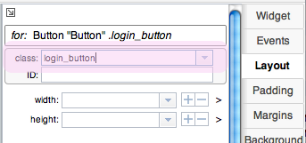
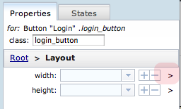
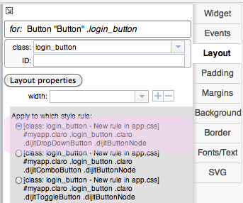
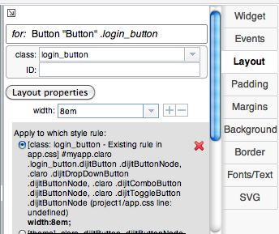

Creating Style Rules with app.css
Maqetta provides three levels of granularity for setting CSS styles:
- app.css - Each Maqetta user has their own personal CSS file, called app.css.
The recommended approach for styling widgets and HTML elements is:
- Assign custom CSS classes to the various widgets and elements on your HTML page
- Create custom style rules using these custom classes in your app.css file
- Use the Detailed CSS panel in Maqetta to place any CSS property changes into the new custom style rules you have created in your app.css file.
- element.style - In many cases, you can simply attach property changes to the 'style' attribute on particular widgets or HTML elements (what is often referred to as element.style. This approach is often the fastest way to work, but is not available for certain CSS properties on certain widgets due to the way that particular widgets have been architected.
- Theme styles - The default theme used by Maqetta is the Dojo Claro theme. The theme can be customized for your organization using the Theme Editor. CSS styling changes made in theme editor apply to all HTML pages in your workspace. (Note: style rules in app.css and element.style almost always override the styling rules in your current theme.
About app.css
app.css is located in the root directory of your user workspace folder and can be accessed from the Files palette. When you create an HTML file using Maqetta, app.css is automatically imported, so all you need to do is add your style rules to app.css.
There are two ways to add a style rule to app.css:
- Use features found in the Detailed CSS pane of the Properties palette to add or modify style rules in app.css.
- Open app.css from the Files palette or the Maqetta Menu bar, and enter the style rule by hand.
Using the Detailed CSS pane on the Properties palette to add/modify style rules in app.css
We recommend that users take advantage of the Detailed CSS pane in the Properties palette when changing CSS property values on widgets or HTML element. These approaches require going up a small learning curve, but provide quick benefits by making your UI mockups easier to modify and facilitate an efficient hand-off of your UI mockup to the development team.
Here are the steps:
- Select the widget or HTML element you need to customize For this tutorial, drag a Button widget from the Controls/Buttons section onto the canvas. To complete subsequent steps, make sure that the Button widget is selected.
-
Assign one or more custom CSS classes to the currently selected widget or element. Custom CSS classes are specified by the 'class' attribute for the widget or element. (The 'class' attribute is a standard attribute in HTML that is available for all elements in the HTML language.) The 'class' attribute editing box is located at the top of all of the various properties palettes (e.g., Widget, Events, Layout, Padding, etc.) found on the right-side of the Maqetta application. In the example below, the Layout palette is open, and the 'class' attribute has been set to the value "login_button". (If you need multiple classes on a particular widget, use spaces to separate the class names.)

-
Create style rules (or modify rules) for your custom class in your app.css file. The pictures below demonstrate the steps for creating a style rule for class "login_button" for the CSS 'width' property.
First, you need to click on the appropriate section button of the Properties palette. The 'width' property is in the Layout palette, so if the Layout palette is not open now, click on the Layout tab to open up the layout palette. 'width' is the first property in this section.
Next, click on the right arrow icon (">") found to the right of the 'width' property's input entry control to cause the CSS Details view to show for the 'width' property:

This will cause the CSS Details pane to show for the CSS 'width' property. This pane shows all existing CSS style rules that are relevant to the 'width' property on this type of widget or HTML element, including any existing style rules found in the app.css file and any existing style rules in the theme CSS files. The pane also shows "proposed new style rules", which are candidate rules that Maqetta can add automatically to app.css.

In the picture below, the user has clicked on the radio button corresponding to the first style rule listed, which is one of the proposed new style rules. With that radio button selected, the user has entered the value "8em" for the value of the 'width' property.
NOTE: The sequence of operations is important. To cause the new property value to go into a particular style rule, you must first click on the radio button for that style rule, and subsequently change and commit the value in the text entry field for the current property (in this case, 'width'). (You can "commit" a property change by either hitting Enter or clicking away from the field.)

This will cause the new property value ("8em") to be inserted into a new "class selector" style rule in app.css that applies to all Button widgets that have custom class "login_button".
After clicking on the radio button to choose the proposed new style rule, and then changing (and committing) the property value to "8em", a new rule will appear in the app.css file as follows:

Some key things to note about the above style rule:
- The style rule begins with an ID selector ("#myapp"). Maqetta automatically puts the ID 'myapp' on the BODY element of HTML files. This ID selector causes the new style rule to override most style rules found in theme CSS files because ID selectors in CSS have higher precedence than style rules that only use class or tag selectors.
- The style rule includes a class selector for the custom class (".login_button" in this case) so that this property assignment will only apply to widgets that have this custom class.
- The style rule includes class selectors (".dijitButton" in this case) to qualify this style rules as only applying to the current type of widget.
- The style rule includes class selectors (".dijitButtonNode" in this case) that targets the correct sub-node to which the 'width' property should apply.
Editing app.css by hand
The myapp id is automatically added to the body tag of every Maqetta HTML file, for use with app.css style selectors. For the Maqetta default Claro theme, style selectors always being with ".claro". Therefore if you copy a theme selector and change ".claro" to "#myapp.claro" (no spaces), it will take precedence over the theme selector. (You can see the theme selectors for a widget property by opening the CSS Details view in the Properties palette.)
For example:
- Open the app.css file by double-clicking on it in the Files palette.
- Add the following style rule:
#myapp.claro .dijitButton .dijitButtonNode { background-color: #3596f1; } - Click on the Save button on the toolbar to save the file.
- Issue a Create > Desktop Application command from the main menubar.
- Drag two Buttons onto the canvas and note that their color is dark blue.
- Save and close the HTML file.
- In the app.css file, change the background color to something else.
- Save your changes.
- Re-open the HTML file and you should see that the button color has changed.
Also note the comments at the top of app.css to see this example.
You may have to close and reopen your HTML file in order to see the affect of changes to app.css.
Creating new style selectors
You can also create your own class and id names in your style rules, and then apply them to widgets by setting the class or id property on the widget. Follow the tutorial below for an example.
- Open app.css and create the following style rules:
.mycolor { color: #c02c2c; } .mypadding { padding-top: 20px; padding-left: 50px; } - Save and close app.css.
- Issue a Create > Desktop Application command from the main menubar.
- Drag a Button onto the canvas.
- Drag a <label> onto the canvas, enter some text in the input box and hit Return.
- With the <label> still selected, enter "mycolor" in the class field at the top of any of the right-side property palettes, then press Enter or click off the field to apply the change.
- The label text should change to red.
- Drag a <div> onto the canvas.
- Enter "mypadding" in the class field, then press Enter or click off the field to apply the change.
- The <div> on the canvas should expand due to the padding styles applied from the mypadding class.
- Drag a Tab Container on to the <div> and note the effects of the padding on the <div>.
- Click on the white space outside of the Tab Container but inside the <div>, to select the div.
- Note that the top of the currently open property palette displays "<div> .mypadding" to identify the selected widget
- Open the Padding section in the Properties palette.
- Click the "show/t/r/b/l" check box under (padding).
- You should see the padding values from the mypadding class in the top and left padding fields.
- Click on the ">" icon to the right of the "top" field to open the CSS Detailed pane.
- Note that the selected style rule is .mypadding from app.css.
- Return to the Padding section by clicking on the "Padding" button towards the top of the Properties palette.
- Now open the CSS Details view for the bottom field by clicking on the ">" icon to the right of the "bottom" field .
- Click on the radio button for .mypadding (app.css).
- In the bottom field enter "10px", then press Enter or click off the field to apply the change.
- Click Save to save the file.
- Click the x on the filename tab to close the file.
- Re-open the same file. You should now see a 10px bottom padding on the <div> containing the Tab Container.